전용서체 v1.33 — 3차 크리틱 전체 반영 전후 비교
확대 그림은 위가 v1.32(지금 공개본), 아래가 v1.33. 빨간 네모 = 점, 파란 선 = 곡선 손잡이·기준선. 문장 견본은 v1.33 에서 바뀐 글자를 빨간색으로 표시.
확인: 바뀐 글자 64자(예상 외 0), 글자 사이 간격 규칙 변화 0, 글자 쌍 12,544쌍 닿음 0. 아직 공개 전(zip·사이트·로고는 v1.32 그대로).
❶ 소문자 깃발 — n 치수로 통일(꼭대기 500·끝까지 93·끝 두께 33), k 는 h 와 같게
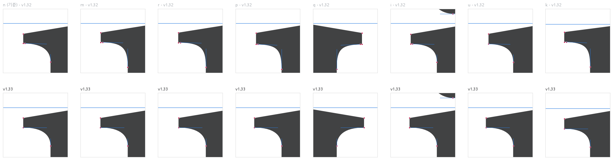
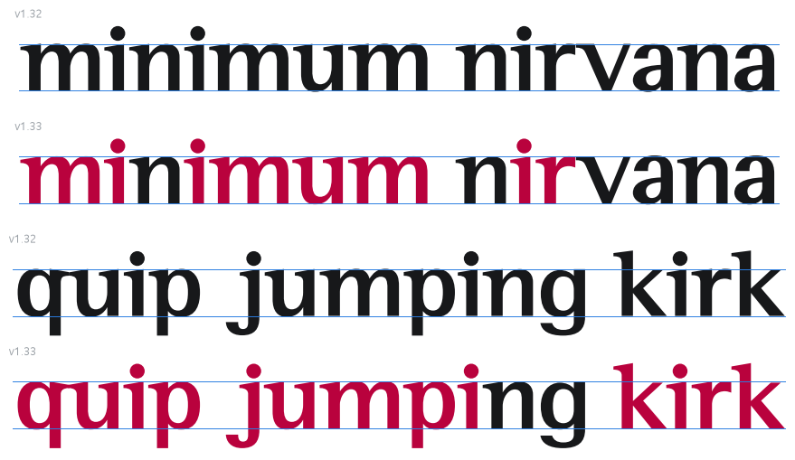
❷ 높이선·기준선 — 평평한 면을 700 / 0 / 500 / −210 에
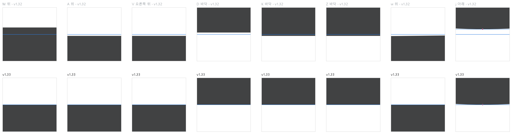
❸ 윤곽 정리 — V 깃발 끝 꺾임, w 세리프 곡선, e·a·r 겹친 점·계단
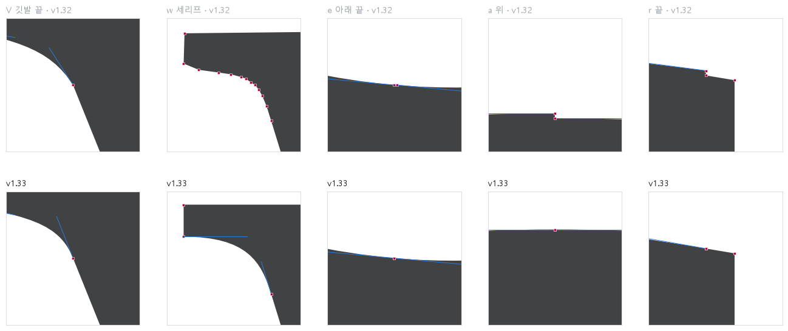
❹ 대문자 깃발 — I·K 를 H 와 같은 수평 윗면으로(좌우 여백 그대로, 폭 I 347→344 · K 713→706)
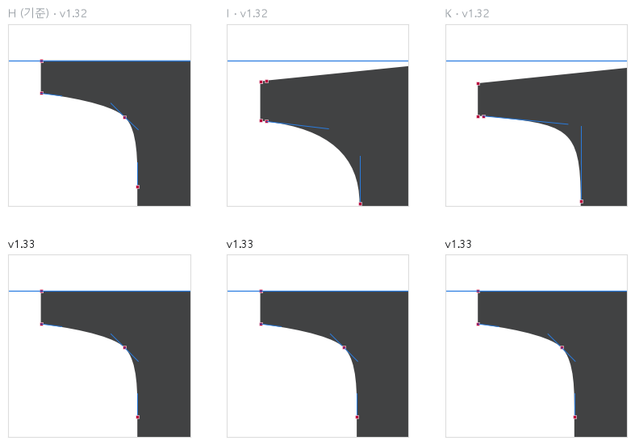
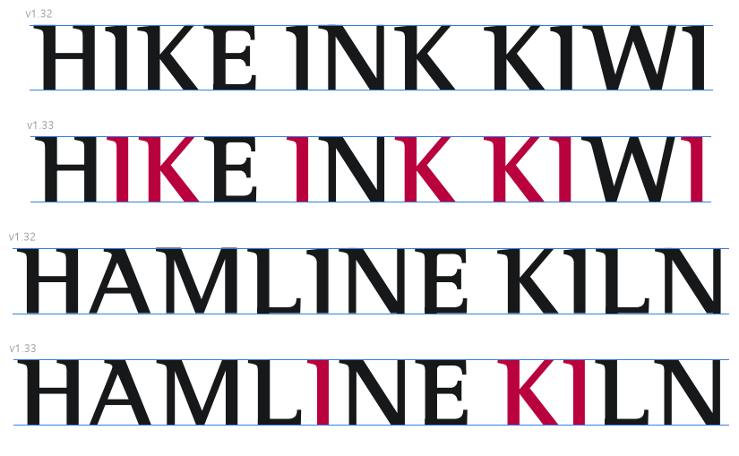
❺ 미세 꺾임 — 깃발 이음 손잡이를 한 줄로
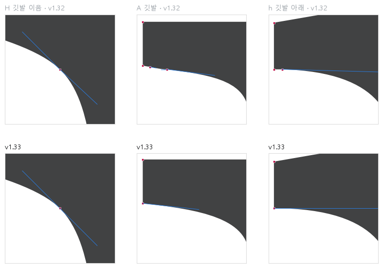
❻ 가는 획 56 · ❼ 둥근 넘침(S 711, s·a 512 근처, g 평평한 위 500)
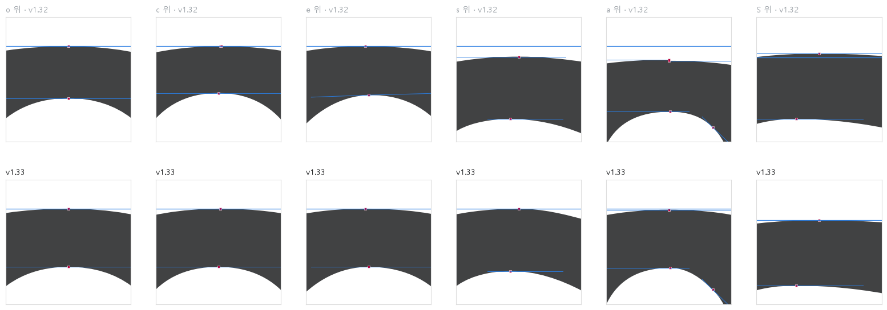
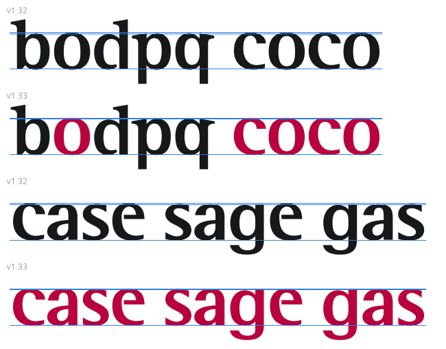
❽ 숫자 1 높이 655 → 644
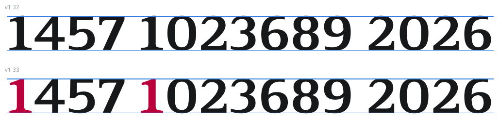
❾ 부리 세리프 기울기 1.42° 통일, 안쪽 턱 정리
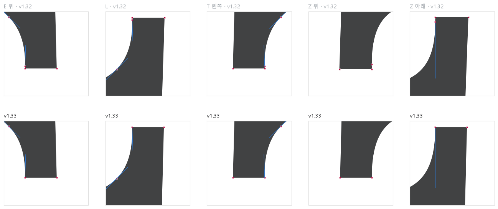
전체 견본
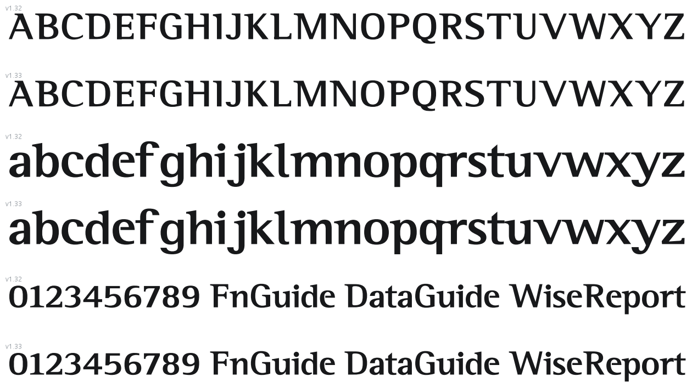